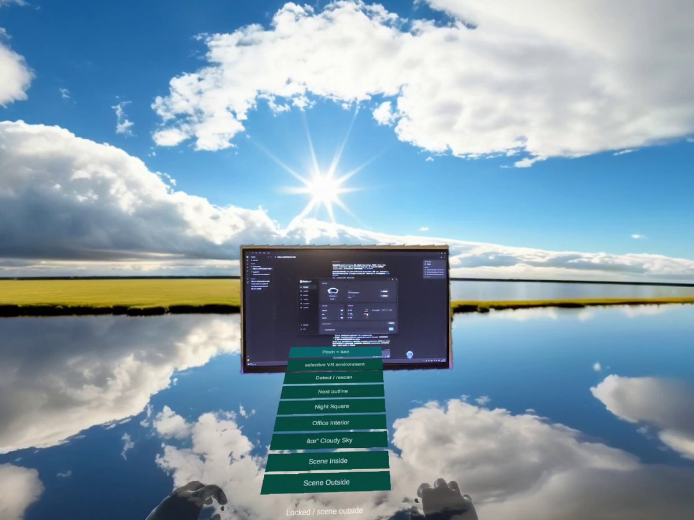
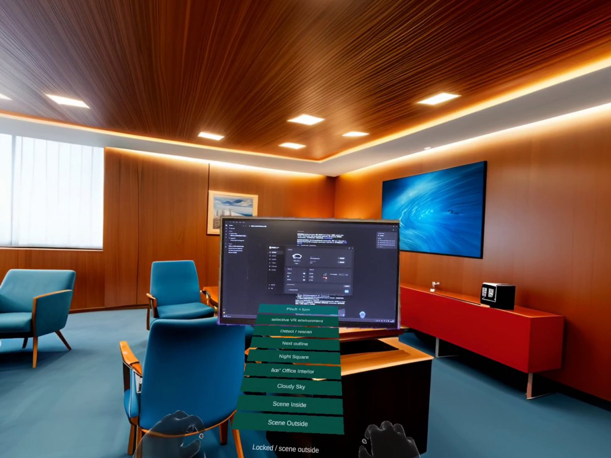

Scene inside
VR inside the object.
The room stays real; the monitor’s silhouette becomes a window into another world, with parallax as the head moves.
The outline of a real object, captured by SAM 2.1, becomes a world-anchored portal to another scene.
SAM 2.1 proposes silhouettes from the PICO camera. Once the user locks one, the mask stops tracking and becomes a fixed portal shape. The contour is simplified and regularised, placed at the estimated surface depth, and given a narrow feathered edge. The user then picks a destination and one of two compositions: Scene Inside puts the world inside the contour with MR around it; Scene Outside fills the surroundings with VR and keeps the object-shaped MR region.
Segmentation is used for spatial design here: the real object defines geometry, then the shape is frozen.
Same contour, two complementary compositions, three destinations.
The room stays real; the monitor’s silhouette becomes a window into another world, with parallax as the head moves.
The room becomes VR; the object-shaped MR region stays, so the real screen remains usable for work.



Components named as in the Unity project and Python service.
| Part | Role |
|---|---|
| SAM 2.1 service | Candidate silhouettes from the PICO camera frame over the USB loopback link. |
| Contour cleanup | Run filtering, point simplification, corner preservation, edge regularisation. |
| Depth unprojection | Image-space contour → world-space plane at the object surface. |
| World anchor | Locked portal keeps its pose independent of later camera changes. |
| Inversion shader | Inside/outside composition from one mask, no second segmentation. |
| Feather band | Visible but narrow blend between layers at the contour. |